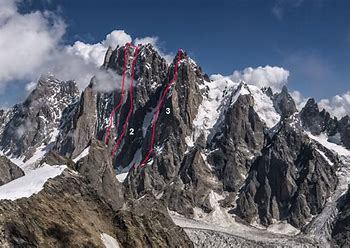
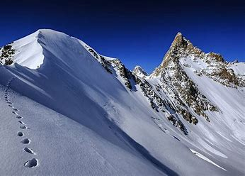

Kishtwar Himalaya is described as a small sub range of the Himalaya Mountains, in the states of Himachal Pradesh and Jammu and Kashmir. The Kishtwar Himalayan range is of sharp rocks and ice peaks. The reason behind this is that its highest peak, Bharanzar (Sickle Moon) is only 6,574 metres in altitude. Nestling on the northeast bank of the Chenab River between Kashmir to the north and Chamba Lahul to the south, Kishtwar Himalayan range is defined as mountaineer's playground. The first mountaineers to visit Kishtwar were three Austrians who, after making the first ascent of Mulkila in Lahul in the year 1939, were interned in India at the outbreak of war. Again eight years later in 1947, at the same time while waiting for their passages back home, Fritz Kolb, with his friends Ludwig Krenek and Fabian Geduldig, visited the Kishtwar range. From a base at Machail they explored the eastern approaches to 'Sickle Moon', the highest peak in the range. They also climbed two small peaks. However, their first attempt to cross the main Himalayan watershed failed. They continued up the Dharlang nala and crossed the remote Poat la into Zanskar, and returned to the Kishtwar side over the Umasi la.
Kishtwar Himalaya

| Kishtwar Himalaya | |
|---|---|
|  | |
| Highest Peak | |
| Peak | Bharanzar |
| Elevation | 6,574 m (21,568 ft) |
| Coordinates | 33.5670°N 76.1599°E |
| Geography | |
| Countries | India |
| Borders on | Jammu and Kashmir and Himachal Pradesh |